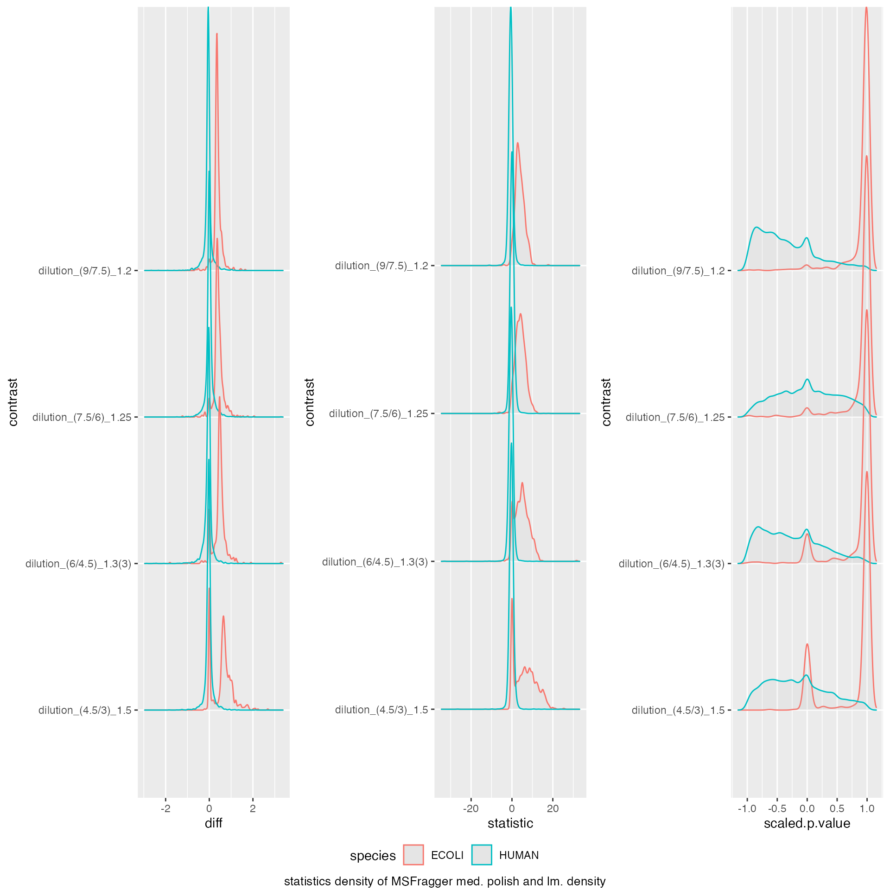
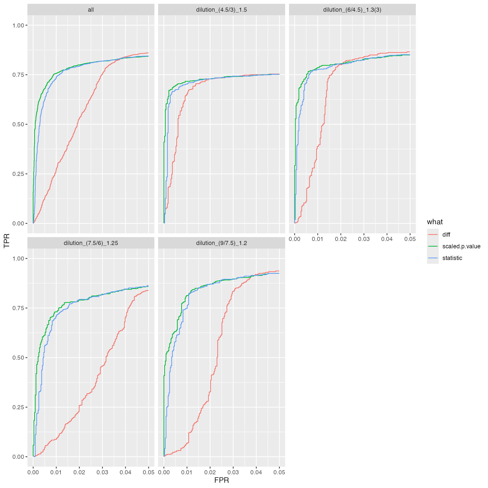
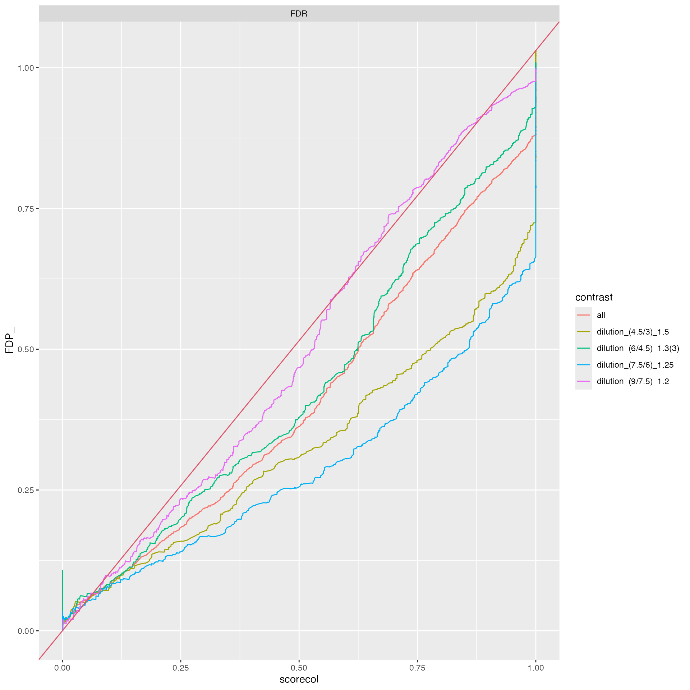
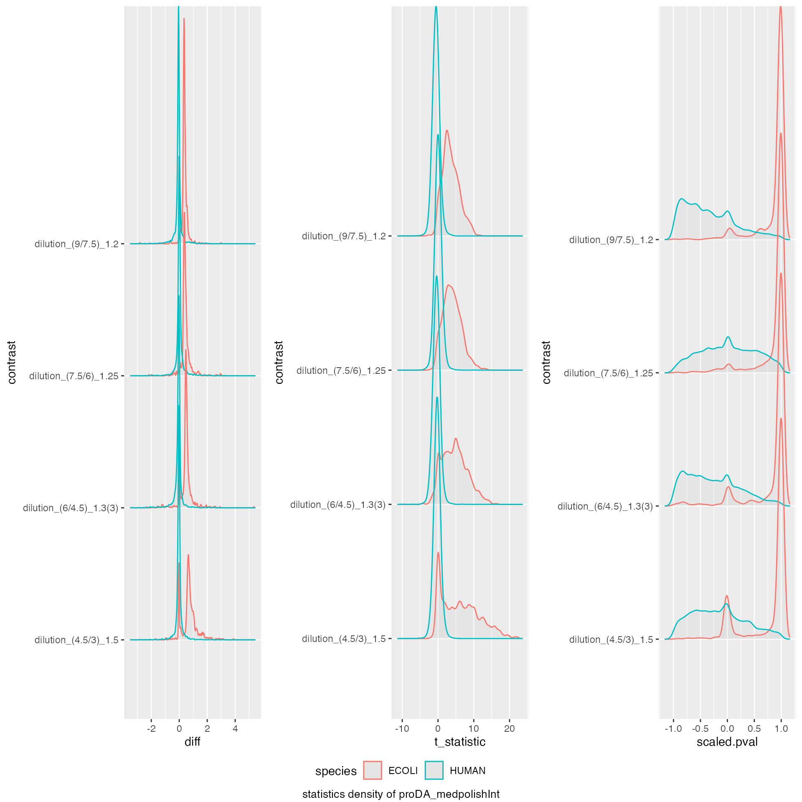
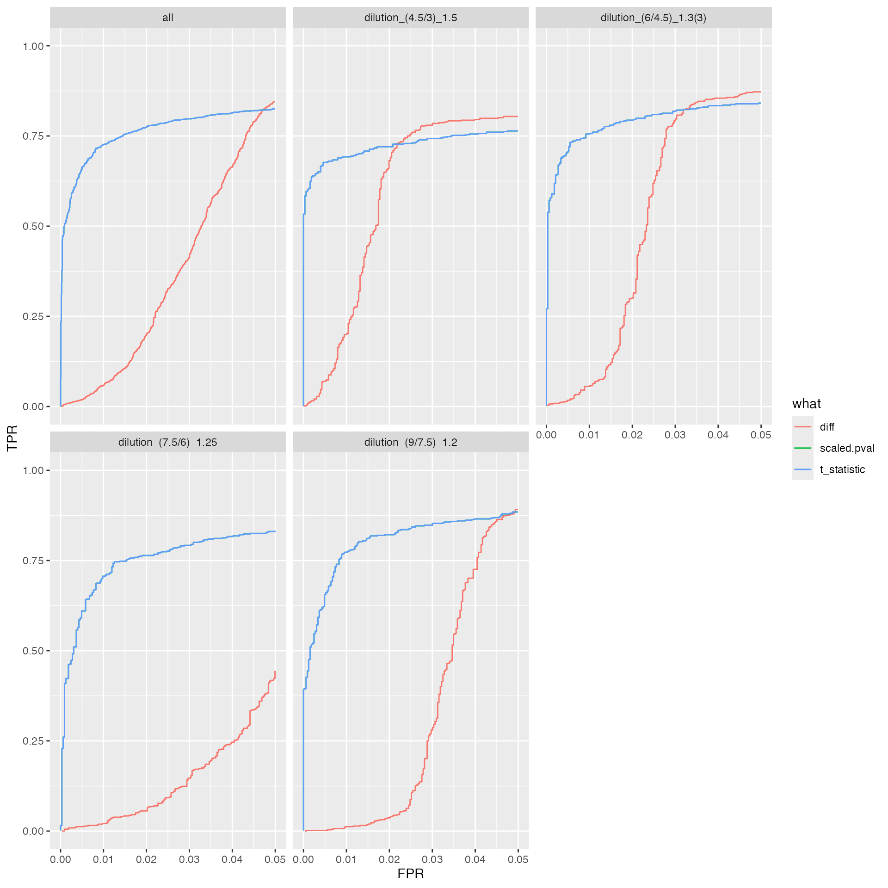

vignettes/BenchmarkFragPipeProteinIonStar.Rmd
BenchmarkFragPipeProteinIonStar.RmdPlease download and install the prolfquadata package
from github
conflicted::conflict_prefer("filter", "dplyr")We start by loading the IonStar dataset and the annotation from the
prolfquadata package. The method inner_join
adds the annotation to the data.
datadir <- file.path(find.package("prolfquadata") , "quantdata")
inputFragfile <- file.path(datadir, "MSFragger_IonStar2018_PXD003881.zip")
inputAnnotation <- file.path(datadir, "annotation_Ionstar2018_PXD003881.xlsx")
annotation <- readxl::read_xlsx(inputAnnotation)## Error in get(paste0(generic, ".", class), envir = get_method_env()) :
## object 'type_sum.accel' not found
protein <- tibble::as_tibble(read.csv(unz(inputFragfile,"IonstarWithMSFragger/combined_protein.tsv"),
header = TRUE, sep = "\t", stringsAsFactors = FALSE))
undebug( prolfquapp::tidy_FragPipe_combined_protein)
protein <- prolfquapp::tidy_FragPipe_combined_protein_deprec(protein)
protein <- protein |> dplyr::filter(unique.stripped.peptides > 1)
merged <- dplyr::inner_join(annotation, protein)
atable <- prolfqua::AnalysisTableAnnotation$new()
atable$fileName = "raw.file"
atable$hierarchy[["protein_Id"]] <- c("protein")
atable$hierarchyDepth <- 1
atable$set_response("razor.intensity")
atable$factors[["dilution."]] = "sample"
atable$factors[["run"]] = "run_ID"
atable$factorDepth <- 1
config <- prolfqua::AnalysisConfiguration$new(atable)
adata <- prolfqua::setup_analysis(merged, config)
lfqdata <- prolfqua::LFQData$new(adata, config)
lfqdata$remove_small_intensities()
pl <- lfqdata$get_Plotter()
pl$intensity_distribution_density()
subset_h <- lfqdata$get_copy()$get_Transformer()$log2()$lfq
subset_h$data <- subset_h$data |> dplyr::filter(grepl("HUMAN", protein_Id))
tr <- lfqdata$get_Transformer()
lfqdataNormalized <- tr$log2()$robscale_subset(lfqsubset = subset_h)$lfq
pl <- lfqdataNormalized$get_Plotter()
pl$intensity_distribution_density()
hm <- pl$NA_heatmap()
hm
Contrasts <- c(
"dilution_(9/7.5)_1.2" = "dilution.e - dilution.d",
"dilution_(7.5/6)_1.25" = "dilution.d - dilution.c",
"dilution_(6/4.5)_1.3(3)" = "dilution.c - dilution.b",
"dilution_(4.5/3)_1.5" = "dilution.b - dilution.a"
)
lmmodel <- "~ dilution."
lmmodel <- paste0(lfqdataNormalized$config$table$get_response() , lmmodel)
modelFunction <- prolfqua::strategy_lm( lmmodel, model_name = "Model")
mod <- prolfqua::build_model(lfqdataNormalized$data, modelFunction)
contr <- prolfqua::Contrasts$new(mod, Contrasts)
contrimp <- prolfqua::ContrastsMissing$new(lfqdataNormalized, Contrasts)
merged <- prolfqua::merge_contrasts_results(contr, contrimp)
mergedmod <- prolfqua::ContrastsModerated$new(merged$merged)
cp <- mergedmod$get_Plotter()
cp$volcano()## $FDR
ttd <- prolfqua::ionstar_bench_preprocess(mergedmod$get_contrasts())
benchmark_prolfqua <- prolfqua::make_benchmark(ttd$data,
model_description = "MSFragger med. polish and lm. density",
model_name = "MSFragger_prot_med_lm",
FDRvsFDP = list(list(score = "FDR", desc = FALSE))
)
knitr::kable(benchmark_prolfqua$pAUC_summaries()$ftable$content)| contrast | what | AUC | pAUC_10 | pAUC_20 |
|---|---|---|---|---|
| all | diff | 94.03414 | 72.03297 | 80.81840 |
| all | scaled.p.value | 95.12016 | 81.86899 | 85.01266 |
| all | statistic | 95.01501 | 80.86869 | 84.54175 |
| dilution_(4.5/3)_1.5 | diff | 91.74353 | 71.35642 | 74.94692 |
| dilution_(4.5/3)_1.5 | scaled.p.value | 91.97449 | 74.07253 | 75.69785 |
| dilution_(4.5/3)_1.5 | statistic | 91.88659 | 73.16519 | 75.26106 |
| dilution_(6/4.5)_1.3(3) | diff | 94.51047 | 77.29426 | 83.11132 |
| dilution_(6/4.5)_1.3(3) | scaled.p.value | 95.25739 | 82.86520 | 85.39251 |
| dilution_(6/4.5)_1.3(3) | statistic | 95.15824 | 82.03018 | 84.98705 |
| dilution_(7.5/6)_1.25 | diff | 93.58321 | 64.35484 | 79.10116 |
| dilution_(7.5/6)_1.25 | scaled.p.value | 95.02455 | 82.23264 | 86.55908 |
| dilution_(7.5/6)_1.25 | statistic | 94.93966 | 81.16409 | 86.10408 |
| dilution_(9/7.5)_1.2 | diff | 95.95465 | 74.05003 | 85.26557 |
| dilution_(9/7.5)_1.2 | scaled.p.value | 97.96069 | 89.12013 | 92.60967 |
| dilution_(9/7.5)_1.2 | statistic | 97.80569 | 87.74253 | 91.93801 |
prolfqua::table_facade(benchmark_prolfqua$smc$summary, "Nr of estimated contrasts")| nr_missing | protein_Id |
|---|---|
| 0 | 3836 |
benchmark_prolfqua$plot_score_distribution()
benchmark_prolfqua$plot_ROC(0.05)
benchmark_prolfqua$plot_FDRvsFDP()
se <- prolfqua::LFQDataToSummarizedExperiment(lfqdataNormalized)
fit <- proDA::proDA(se, design = ~ dilution. - 1, data_is_log_transformed = TRUE)
contr <- list()
contr[["dilution_(9/7.5)_1.2"]] <- data.frame(
contrast = "dilution_(9/7.5)_1.2",
proDA::test_diff(fit, contrast = "dilution.e - dilution.d"))
contr[["dilution_(7.5/6)_1.25"]] <- data.frame(
contrast = "dilution_(7.5/6)_1.25",
proDA::test_diff(fit, contrast = "dilution.d - dilution.c"))
contr[["dilution_(6/4.5)_1.3(3)"]] <- data.frame(
contrast = "dilution_(6/4.5)_1.3(3)",
proDA::test_diff(fit, contrast = "dilution.c - dilution.b"))
contr[["dilution_(4.5/3)_1.5"]] <- data.frame(
contrast = "dilution_(4.5/3)_1.5",
proDA::test_diff(fit, contrast = "dilution.b - dilution.a" ))
bb <- dplyr::bind_rows(contr)
ttd <- prolfqua::ionstar_bench_preprocess( bb , idcol = "name" )
benchmark_proDA <- prolfqua::make_benchmark(ttd$data,
contrast = "contrast",
toscale = c("pval"),
fcestimate = "diff",
benchmark = list(
list(score = "diff", desc = TRUE),
list(score = "t_statistic", desc = TRUE),
list(score = "scaled.pval", desc = TRUE)
),
model_description = "proDA_medpolishInt",
model_name = "proDA_medpolishInt",
FDRvsFDP = list(list(score = "adj_pval", desc = FALSE))
, hierarchy = c("name"), summarizeNA = "t_statistic"
)
sumarry <- benchmark_proDA$smc$summary
prolfqua::table_facade(sumarry, caption = "nr of proteins with 0, 1, 2, 3 missing contrasts.")| nr_missing | name |
|---|---|
| 0 | 3836 |
knitr::kable(benchmark_proDA$pAUC_summaries()$ftable$content)| contrast | what | AUC | pAUC_10 | pAUC_20 |
|---|---|---|---|---|
| all | diff | 91.99592 | 61.86335 | 76.45600 |
| all | scaled.pval | 94.25411 | 80.02409 | 83.62640 |
| all | t_statistic | 94.25411 | 80.02409 | 83.62640 |
| dilution_(4.5/3)_1.5 | diff | 89.74745 | 69.12772 | 76.47584 |
| dilution_(4.5/3)_1.5 | scaled.pval | 91.77920 | 74.78168 | 77.29185 |
| dilution_(4.5/3)_1.5 | t_statistic | 91.77920 | 74.78168 | 77.29185 |
| dilution_(6/4.5)_1.3(3) | diff | 92.40180 | 68.82831 | 79.75247 |
| dilution_(6/4.5)_1.3(3) | scaled.pval | 94.09976 | 81.69756 | 84.47232 |
| dilution_(6/4.5)_1.3(3) | t_statistic | 94.09976 | 81.69756 | 84.47232 |
| dilution_(7.5/6)_1.25 | diff | 91.19929 | 48.04371 | 70.53692 |
| dilution_(7.5/6)_1.25 | scaled.pval | 93.94111 | 79.59794 | 84.24361 |
| dilution_(7.5/6)_1.25 | t_statistic | 93.94111 | 79.59794 | 84.24361 |
| dilution_(9/7.5)_1.2 | diff | 94.43666 | 61.61623 | 79.02591 |
| dilution_(9/7.5)_1.2 | scaled.pval | 97.21442 | 85.21924 | 89.29099 |
| dilution_(9/7.5)_1.2 | t_statistic | 97.21442 | 85.21924 | 89.29099 |
prolfqua::table_facade(benchmark_prolfqua$smc$summary, "Nr of estimated contrasts")| nr_missing | protein_Id |
|---|---|
| 0 | 3836 |
benchmark_proDA$plot_score_distribution()
benchmark_proDA$plot_ROC(0.05)
benchmark_proDA$plot_FDRvsFDP()Direct comparison with msqrob2 is impossible since, to fit the
dropout model, the peptide intensities are required, while here, we are
starting the analysis from the combined_proteins.tsv
file.
bdir <- file.path("../inst/Benchresults/",format( Sys.Date(), "%Y%m%d"))
if (!dir.exists(bdir)) {dir.create(bdir)}
saveRDS(list(benchmark_proDA = benchmark_proDA, benchmark_prolfqua = benchmark_prolfqua)
,file.path("../inst/Benchresults/",format( Sys.Date(), "%Y%m%d"),"FragPipev14_comb_prot.RDS"))
proda <- benchmark_proDA$pAUC_summaries()$ftable$content
proda$package <- "proda"
prolfqua <- benchmark_prolfqua$pAUC_summaries()$ftable$content
prolfqua$package <- "prolfqua"
tmp <- dplyr::bind_rows(proda, prolfqua)
tmp$what |> unique()## [1] "diff" "scaled.pval" "t_statistic" "scaled.p.value"
## [5] "statistic"
tmp$what[tmp$what == "statistic"] <- "t_statistic"
tmp$what[tmp$what == "scaled.pval"] <- "scaled.p.value"
tmp |> ggplot2::ggplot(ggplot2::aes(x = what, y = pAUC_10, group = package, color = NULL, fill = package)) +
ggplot2::geom_bar(stat = "identity", position = ggplot2::position_dodge()) +
ggplot2::facet_wrap(~ contrast) +
ggplot2::theme(axis.text.x = ggplot2::element_text(angle = 90, vjust = 0.5, hjust = 1))